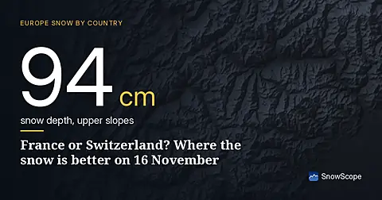

Is there snow in Ireland? Not much yet (16 November 2026)
Ireland's mountains are still green on 16 November. No measurable snow covers the high ground, and the week ahead shows no fresh snow in the forecast. If you are planning a November trip to ski, now is not the time.
See the live snow forecast for Ski Club Of Ireland in the SnowScope appSnow depth, powder alerts and the 3D map, free.
What the map shows today
Across Ireland's 3,120 km² of ski terrain, there is no snow cover. The single resort on our map, Ski Club Of Ireland, sits at 0 cm depth. Ground below 500 m and between 500 m and 1,000 m both hold nothing measurable. Mid-November is a waiting game in Ireland: the winter snow season has not yet arrived.
The lack of snow is normal for this stage of the year. Ireland's mountains are cold enough to hold snow when it falls, but rain and mild air dominate the mid-Atlantic climate through most of November. Early-season skiers need patience.
| Resort | Snow depth | New snow, 72 h | Coming, next days | Top |
|---|---|---|---|---|
| Ski Club Of Ireland | 0 cm | 0 cm | 0 cm | 209 m |

What comes next
The three-day outlook and the seven-day forecast both show 0 cm of new snow. No storm systems are moving in this week. The mountains will stay dry and bare for the time being. Late November and early December often bring the first significant snow to Irish peaks, but that moment has not yet arrived.
If you are thinking of a trip soon, waiting another two to three weeks gives you a much better chance of finding skiable conditions. The fact sheet tracks snow daily, so you can watch for the first real weather event.
Height makes little difference now
Usually, higher ground builds snow deeper and holds it longer than lower slopes. At 0–500 m elevation, Irish peaks have 0 cm today. Between 500 m and 1,000 m, the story is the same. Without any snow at all, altitude does not matter yet. When winter arrives and storms begin to track across the Atlantic, upper slopes will gain depth faster, but that is weeks away.
Ireland's ski terrain is small and concentrated in the mountains. When snow does come, it will spread across all elevations. For now, there is nothing to chase on any slope.
Why November is quiet in Ireland
The Atlantic Ocean moderates Ireland's climate. Moisture-rich air sweeps in from the west, but temperatures often hover just above freezing in November. Rain falls more often than snow at this time of year. The mountains are simply too mild for the first three weeks of autumn-turning-winter.
December brings colder air masses and a higher chance of snow-bearing systems. If you check the SnowScope map in early December, you may see the first white patches. November visitors usually see bare earth, rock, and grass.
Planning a November visit
If you are keen to ski early season, Ireland is not your best bet in mid-November. Nearby Scotland and the Alps offer better odds, though snow is still spotty everywhere at this time. Ireland's resorts prepare their slopes and groomers through autumn, but natural snow does not fall reliably until later.
The smart move is to monitor SnowScope through the last week of November and early December. The first real dump of snow will show up on the map instantly. Plan your trip then, when white ground is actually under your skis.
What to do now
If you are already in Ireland and hoping to ski, check the Ski Club Of Ireland's own lift status and their snow reports. They may have made snow or opened runs with minimal cover, but conditions will be thin and rocky. Early-season runs mean groomed slopes only; stay off steep terrain where rocks lie close beneath the surface.
Consider visiting in late December or January instead. That is when Ireland's mountains build their most reliable snow pack. The payoff for patience is real base depth and genuine ski days.
Tips for skiers
- Check the Ski Club Of Ireland's official website and lift status before travelling; SnowScope shows zero snow today, so conditions are not yet ready.
- If you do visit soon, stay on groomed runs only: early-season snow is thin and rocks lie close underneath.
- Wind-packed snow on ridges and upper slopes can be unstable early in the season; stick to protected terrain and trees until a solid base forms.
- November in Ireland is better spent planning a December or January trip, when reliable snow cover arrives.
- Watch the SnowScope map daily in late November; the first real snow event will trigger the best early-season window.
About these numbers
Resort snow depths are the deepest snow on the resort's upper slopes on the date shown; they are estimates for an area, not a measurement at one point. Forecasts can change. Always read the official avalanche bulletin before going off-piste.
Cite this report
For research, teaching or the press: the numbers and charts are free to reuse under CC BY 4.0 with this citation.
SnowScope (2026), Is there snow in Ireland? Not much yet (16 November 2026), https://snowscope.app/blog/en/2026/11/ireland-snow-report-16-november-2026.html, accessed 2026-11-16
SnowScope (Atlas Labs). (2026, November 16). Is there snow in Ireland? Not much yet (16 November 2026). SnowScope snow reports. https://snowscope.app/blog/en/2026/11/ireland-snow-report-16-november-2026.html
BibTeX
@misc{snowscope2026irelandsnowreport16novem,
author = {{SnowScope (Atlas Labs)}},
title = {Is there snow in Ireland? Not much yet (16 November 2026)},
year = {2026},
month = nov,
howpublished = {\url{https://snowscope.app/blog/en/2026/11/ireland-snow-report-16-november-2026.html}},
note = {Published 2026-11-16 20:42 UTC; accessed 2026-11-16}
}· CC BY 4.0 · Methods, data and tools →
Ski Club Of Ireland: snow and temperature by height, this winter vs last (tools) →
Follow Ski Club Of Ireland
Free: a message when fresh snow is coming, and the forecast every morning.
More snow reports

SnowScope checks its daily snow map against 2,012 mountain stations. On 9 November 2026, the map was within 7.7 cm typical error and right 88% of the time.

Greek mountains have only 10 km² of snow cover on 16 November. The first real snow arrives around 21 November, but resorts stay bare for now.

France or Switzerland? Where the snow is better on 16 November. Snow cover, new snow, resorts and the days ahead in France on 16 November.